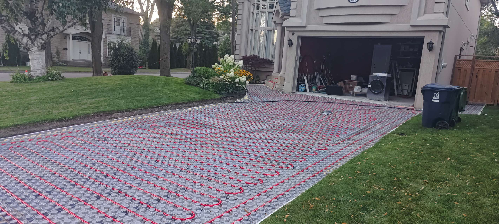
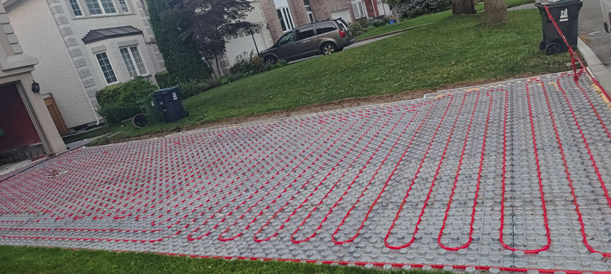

Solution 1: Driveway Transformation & Interlock Engineering
The Problem
"My current driveway is cracked asphalt, heaving concrete, or old pavers that have sunk. I want a permanent replacement that boosts curb appeal."
The Engineering Challenge
A driveway in the Greater Toronto Area faces two massive threats: Heavy Vehicle Loads and Freeze-Thaw Cycles.
- The Asphalt Failure: Asphalt is a flexible pavement, but it oxidizes and becomes brittle. Once water penetrates a small crack, it freezes, expands, and destroys the surface.
- The "Budget" Paver Failure: Many contractors quote low prices by only digging 6 inches deep. On Ontario's clay soil, this is insufficient. The clay absorbs water, heaves in winter, and mixes with the gravel base, causing the "tire ruts" you see in older driveways.
The JR Solution: The "Road-Standard" Foundation
We do not build "driveways"; we build residential roads. Our process exceeds standard building code requirements to ensure longevity.
1. Deep-Impact Excavation
We remove the old asphalt and excavate 12 to 18 inches into the subgrade (depending on soil analysis). This removes the organic, compressible topsoil and unstable clay that causes sinking.
2. Geotextile Soil Separation
This is the step budget contractors skip. We install a heavy-duty, woven Geotextile Fabric at the bottom of the excavation.
Why: This acts like a filter. It prevents the unstable clay soil below from rising up and contaminating your clean gravel base. It stabilizes the ground effectively, distributing the weight of your vehicles.
3. High-Performance Bedding (HPB)
Instead of standard limestone screenings (which trap water), we often utilize High-Performance Bedding (HPB). This is a washed, clear angular stone that achieves 98% compaction immediately. It allows water to drain vertically, preventing the formation of ice lenses under your driveway that cause heaving.
4. 80mm Vehicular-Rated Pavers
We strictly install pavers that are 80mm (3.15 inches) thick or greater for driveways.
Why: Thinner 60mm pavers are for patios. A driveway paver must withstand the torque of power-steering (turning wheels while stopped) and the weight of SUVs. We source high-density stones from our CornerStone and LuxeStone divisions that are resistant to de-icing chemicals and oil stains.
5. Structural Edge Restraints
The edges of a driveway are the weakest point. We install a Concrete Reinforced Soldier Course or heavy-duty Permaledge restraints. This acts as a structural rib, locking the pavers together so they cannot spread outward over time.
The Result
- Immediate ROI: A custom stone driveway is one of the highest ROI exterior renovations (adding 10-15% to perceived property value).
- Zero-Maintenance: No resealing asphalt every year. No weeding (thanks to our Polymeric Sand).
- Permeability: We can engineer the system to meet city "Soft Landscaping" bylaws, allowing you to widen your driveway legally where asphalt would be prohibited.
Solution 2: The Automated Heated Driveway
The Problem
"I am tired of shoveling snow, and I'm worried about ice accidents."
The Engineering Challenge
In the GTA, winter brings a mix of heavy snow and freezing rain. Manual shoveling is labor-intensive, and hiring a plow service comes with risks—metal plow blades scratch expensive stone, and pile-ups damage landscaping. Furthermore, using rock salt (Sodium Chloride) to melt ice chemically attacks the concrete matrix of pavers, leading to pitting and deterioration.
The JR Solution: Hydronic & Electric Snow Melt Systems
We install fully automated snow-melting infrastructure directly beneath your driveway and walkways.
- The Technology: We utilize PEX tubing (Hydronic) or Resistive Cables (Electric) embedded in the bedding layer of the pavement.
- Smart Sensors: The system is governed by pavement-mounted sensors that detect both moisture and temperature. The system only activates when it is actually snowing or freezing, ensuring maximum energy efficiency. It does not run 24/7.
- Insulation Layer: To prevent heat loss into the ground, we install high-compression rigid insulation boards beneath the heating elements, forcing 90% of the thermal energy upward to melt the snow.
The Result
- Zero Accumulation: Snow melts as it hits the ground.
- Stone Protection: You never need to use salt, preserving the color and finish of your driveway for decades.
- Safety: Elimination of "black ice" slip hazards on your front steps.
Solution 3: Driveway Stabilization (Fixing the "Sink")
The Problem
"My driveway has tire ruts, sunken spots, or my asphalt is cracking."
The Engineering Challenge
Driveways sink for one reason: Base Failure. Most "budget" contractors excavate only 6-8 inches and dump gravel on top of clay soil. Over time, the clay mixes with the gravel (subgrade contamination), destroying the structural integrity.
The JR Solution: The "High-Performance" Base
We treat your driveway like a municipal road, not a garden path.
- Deep Excavation: We excavate a minimum of 12 to 18 inches (depending on soil analysis) to remove organic, compressible soil.
- Geotextile Separation: We install a heavy-duty woven geotextile fabric at the bottom of the trench to prevent clay contamination.
- Structural Aggregate: We use Granular 'A' or HPB that achieves 95-98% compaction for a rigid, non-settling platform.
- Edge Restraints: We pour concrete-reinforced edging to prevent pavers from spreading outward over time.
The Result
A driveway that remains perfectly flat, resists tire tracking, and is backed by our Workmanship Warranty against settlement.
Solution 4: Slope Management & Retaining Walls
The Problem
"My backyard is a steep hill and I have no usable space."
The Engineering Challenge
A slope is wasted real estate. However, simply stacking stones to hold back earth is dangerous. Soil creates Hydrostatic Pressure—when it rains, the water-logged soil behind a wall becomes incredibly heavy, pushing the wall forward until it topples.
The JR Solution: Reinforced Earth Systems
We reclaim your land by building engineered terraces using natural Armor Stone or Architectural Blocks.
- Geogrid Reinforcement: For walls over 24 inches, we install layers of Geogrid—a high-strength synthetic mesh that extends 4-6 feet back into the soil slope.
- The "Drainage Chimney": We install a 12-inch vertical column of clear drainage stone directly behind the wall face, wrapped in filter fabric.
- Weeping Tiles: At the base of the wall, we install a perforated drain pipe that carries water away to a suitable outlet.
The Result
We turn a steep hill into a series of flat, functional "outdoor rooms" (upper dining terrace, lower lounging garden) that significantly increase your property's usable square footage and resale value.
Solution 5: Pool Deck Safety & Thermodynamics
The Problem
"My current pool deck gets scorching hot in summer and is slippery when wet."
The Engineering Challenge
A pool deck must function as a "barefoot zone."
- Heat: Dark, dense stones (like black granite or slate) absorb infrared radiation. On a 30°C day, black stone can reach 60°C+, burning feet.
- Slip: Polished or honed surfaces become skating rinks when splashed with pool water.
The JR Solution: Thermal-Optimized Material Selection
We leverage our LuxeStone inventory to select materials specifically geologically suited for pool environments.
- Travertine & Limestone: These sedimentary stones are naturally porous and light in color. They reflect sunlight and utilize "evaporative cooling" to remain comfortable to the touch.
- Textured Sintered Stone: We supply manufactured slabs with specific "R-Ratings" (Slip Resistance). We aim for an R11 rating for pool decks.
- Coping Profiles: We install Bullnose (Rounded) coping for safety or Rebated Square Edge for a modern look.
The Result
A resort-style pool deck that is safe for children running and comfortable for sunbathing all day long.
Solution 6: Advanced Drainage & Grading
The Problem
"I have standing water on my patio or worry about a wet basement."
The Engineering Challenge
Water is the enemy of structures. If water pools on your patio, it accelerates freeze-thaw damage (cracking stones). If it pools against your house, it causes basement leaks.
The JR Solution: Laser-Guided Water Management
We solve drainage issues before we lay a single stone.
- Positive Grading: Using laser levels, we establish a strict 1% to 2% slope on all hard surfaces, directing water away from your foundation.
- Channel Drains: In difficult areas, we install sleek, stainless steel Linear Channel Drains that capture surface runoff.
- Permeable Paver Systems: For low-lying areas, we install Permeable Pavers with wide, stone-chip joints that allow instant water passage.
The Result
A dry basement, no ice patches in winter, and a patio that dries minutes after a summer storm ends.
Solution 7: Privacy & Feature Walls
The Problem
"I feel exposed in my own backyard. I want seclusion from neighbors without building a generic wood fence."
The Design Challenge
In the dense neighborhoods of the GTA, standard 6-foot wood fences often feel claustrophobic and offer zero sound dampening. Municipal bylaws strictly limit fence heights, making it difficult to achieve true privacy for raised decks or patios.
The JR Solution: Architectural Masonry & Privacy Screens
- Masonry Sound Barriers: Unlike wood, a stone feature wall has mass. It physically dampens neighborhood noise (traffic, AC units).
- Structural Pillars: We install stone-clad pillars with integrated lighting that span high-end privacy screens (frosted glass, laser-cut aluminum, or horizontal cedar).
- The "Green" Wall: We design planter-wall hybrids by building raised stone masonry planters with mature cedars inside, effectively raising the "privacy height" to 8-9 feet while complying with fence bylaws.
The Result
A private courtyard feel that blocks sightlines while maintaining an open, airy atmosphere.
Solution 8: The Outdoor Kitchen & Chef's Station
The Problem
"I want to cook and entertain outside, but I hate running back and forth to the indoor kitchen."
The Engineering Challenge
Building a kitchen outdoors is not the same as building one indoors. Materials face -30°C winters, blazing UV sun, and rain. Standard indoor quartz turns yellow in the sun. Wood framing rots against damp ground.
The JR Solution: The "Zero-Decay" Structure
- Masonry Structure: We build the "carcass" using concrete block or galvanized steel framing. It is rot-proof, fire-proof, and pest-proof.
- Utility Infrastructure: We trench and run licensed Gas, Water, and Electrical lines with "Winterization Points" for safe seasonal closure.
- Surface Technology: We recommend Granite or Sintered Stone for countertops—thermally shock-resistant materials that handle hot pots and snow without cracking.
The Result
A fully functional culinary zone with built-in grills, refrigeration, and bar seating that serves as the social heart of your summer.
Solution 9: Fire Pits & Fireplaces
The Problem
"My backyard is unusable once the sun goes down or the weather turns chilly."
The Design Challenge
Fire brings people together, but safety is paramount. A cheap metal bowl kills the grass and rusts. A poorly built stone pit can crack from thermal stress (heat expanding the stone while the outside air is cold).
The JR Solution: Refractory Engineering
- The Core: We construct the inner shell using Fire Brick and Refractory Mortar (the same material used in kilns).
- Gas Integration: For instant ambiance, we install 300,000+ BTU gas burners with plumbing concealed beneath the patio base.
- Safety Clearances: We design features to meet all local fire codes regarding distance from combustibles.
The Result
A 3-season outdoor living room. You gain 2-3 extra months of backyard use in Spring and Autumn.
Solution 10: Front Step Restoration (Crumbling Concrete)
The Problem
"My front concrete steps are pitting, spalling, or separating from the house. It looks neglected and unsafe."
The Engineering Challenge
Concrete steps fail because of Salt Damage and Frost Heave. Once water gets into a hairline crack and freezes, it acts like a wedge, popping the face of the concrete off (spalling).
The JR Solution: Natural Stone Overlay or Reconstruction
We have two methods:
- Method A: The Stone Overlay: If the structural concrete core is sound, we clad it in 2-inch thick Natural Stone Treads for the look of solid stone at lower cost.
- Method B: The Solid Stone Rebuild: We remove concrete entirely and stack massive solid blocks (4-6 feet wide) that rely on gravity and friction—virtually immune to winter damage.
The Result
A grand entrance that enhances curb appeal and provides safe, non-slip footing for delivery drivers and guests.
Solution 11: The "Modern Resort" Look
The Problem
"I hate the look of small, busy 'cobblestone' pavers. I want the seamless, clean look of a Miami hotel or European villa."
The Design Challenge
Modern design relies on Scale and Minimalism. Achieving this requires large format slabs (24x36 or 36x36 inches). However, large slabs are unforgiving—if the base isn't perfect, they will rock, crack, or have "lippage" (uneven edges that you trip on).
The JR Solution: Large Format Sintered Stone & Precision Bedding
- Sintered Stone / Porcelain: High-tech manufactured slabs that mimic marble or concrete but are non-porous and stain-proof.
- Lippage Tuning: We use spacer-leveling clips during installation to ensure a perfectly flat, glass-like surface plane.
- Tight Tolerances: We aim for 3mm joints (barely visible), filled with resin-based grout for a seamless, monolithic appearance.
The Result
A sleek, contemporary outdoor floor that blurs the line between indoor luxury and outdoor living.
Solution 12: The Weed-Free Patio System
The Problem
"I love the look of stone, but I hate spending my weekends pulling weeds and fighting ant hills in the joints."
The Engineering Truth
A common myth is that weeds grow from under the patio. In reality, 95% of weeds grow from the top down. Seeds blow in the wind, land in the cracks, and take root in the dirt that accumulates there. Standard "playground sand" washes away in the rain, leaving deep gaps.
The JR Solution: Polymer Joint Stabilization
We treat the joints as a structural element. We utilize High-Performance Polymeric Sand (such as HP NextGel or G2).
- The Chemistry: This material creates a cross-linked polymer bond when activated with water. It cures into a unified, flexible substance that feels like hard rubber.
- The "Elastic" Bond: Unlike mortar (which cracks), polymeric sand offers flexibility, absorbing freeze-thaw movements without breaking its seal.
- Rapid Rain Technology: The polymers we use become rain-safe within minutes of installation, preventing washout.
The Result
A sealed, impermeable surface. Weeds cannot root, ants cannot burrow, and the clean lines of your patio remain crisp for years.
Solution 13: Barrier-Free & Accessible Entrances
The Problem
"I need wheelchair, walker, or stroller access, but I don't want my home to look like a hospital or have an ugly metal ramp."
The Design Challenge
Accessibility usually comes at the cost of aesthetics. Standard aluminum ramps are functional but destroy curb appeal. Furthermore, code requires a 1:12 slope ratio, which requires significant landscape engineering to hide.
The JR Solution: Universal "Invisible" Design
- Integrated Stone Ramps: We build ramps using the same premium pavers as the rest of the landscape, utilizing curved masonry walls to mask the grade change.
- Texture Mapping: We select stones with specific tactile finishes that provide maximum grip for wheels and walkers, even in rain.
- Seamless Thresholds: We engineer zero-step entries that keep water out but let wheels roll in smoothly.
The Result
A "Forever Home" exterior that creates safe, independent access for aging parents or family members with mobility challenges, without compromising on luxury.
Solution 14: Integrated Landscape Lighting
The Problem
"My house looks great during the day, but at night, the steps are dangerous and the backyard looks like a black hole."
The Engineering Challenge
Lighting is often an afterthought. If you try to add lights after the stone is laid, you have unsightly wires. Solar lights lack the lumen output and battery life to provide safety during Canadian winters.
The JR Solution: Hardwired Low-Voltage Infrastructure
We design lighting plans during the Excavation Phase. We bury conduit piping and wiring beneath the gravel base before compaction.
- Core-Drilling: We drill directly into stone blocks for step lights (recessed into risers), cap lights (under wall lips), and in-grade lights (flush-mounted in driveways).
- Smart Control: We install professional-grade transformers that link to smartphones for scheduling and dimming.
The Result
Instant Ambiance & Security. Your property looks larger at night because light pushes back the darkness. You eliminate trip hazards, making your outdoor space usable 24 hours a day.
Solution 15: Bespoke Design & Complex Builds
The Problem
"I have a specific vision (or a set of architect's drawings) that doesn't fit into a standard box. I need a partner who can execute a complex, multi-layered project."
The Construction Challenge
Standard contractors operate on templates. When a project involves unique constraints—such as heritage property restrictions, custom stone fabrication, intricate water features, or multi-level engineering—template contractors cut corners or refuse the job. True custom work requires Cross-Disciplinary Coordination.
The JR Solution: The "Blank Canvas" Approach
We thrive on complexity. Because we are part of the JR Partners ecosystem, we have resources that standalone landscapers do not.
- Custom Fabrication: If the stone you want doesn't exist, our CornerStone division can fabricate it. We can cut custom radius curves, engrave family crests, or create monolithic stone features to your exact specifications.
- Architectural Collaboration: We speak the language of architects. If you're working with a Landscape Architect or Interior Designer, we act as the Technical Executor.
- Total Site Management: For large estates or commercial plazas, we manage the entire "envelope"—gas, electrical, irrigation, and softscaping coordination. You deal with one Project Manager, not five different trades.
The Result
A signature landscape that reflects your unique vision, executed with millimeter precision and backed by the full resources of the JR Partners vertical integration model.
Recent Projects

Premium Driveway
Custom interlocking installation

Outdoor Living Space
Stone patio with fire feature

Complete Landscape
Multi-level hardscape design
Ready to Solve Your Challenge?
Let's discuss your specific situation and engineer the perfect solution for your property.
Contact Us for a Consultation